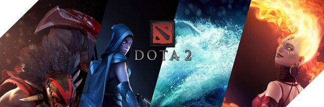
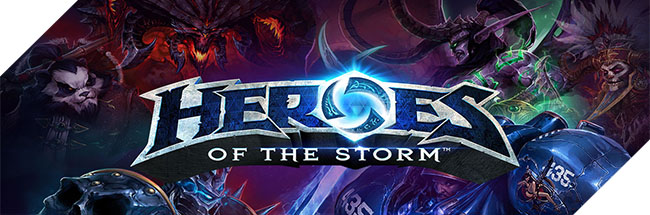
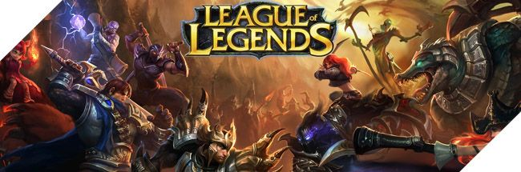
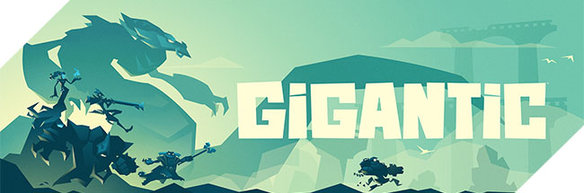
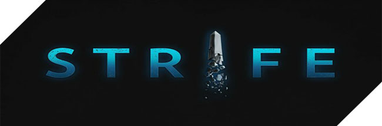
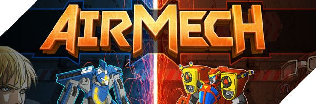
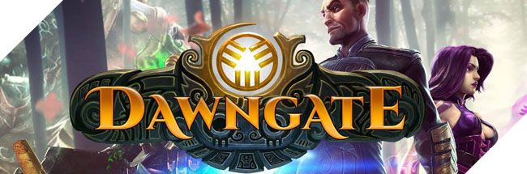

Desde Egipto a la Grecia Clásica pasando por los países nórdicos, China o la India.
Dioses de gran parte del mundo medirán sus fuerzas en este prometedor MOBA desarrollado por los creadores del exitoso Tribes: Ascend,
estudio que se ha propuesto evolucionar el género con una aventura rolera más intensa de lo habitual. Campeonatos profesionales,
millones de jugadores disputando partidas a diario, equipos patrocinados… si hablamos del auge de los eSports es imposible no mentar
la gran importancia que han tenido en este proceso los populares MOBA (Multiplayer Online Battle Arena por sus siglas en inglés).
Y es que desde el clásico Defense of the Ancient al exitoso League of Legends,
este género se ha convertido en un auténtico fenómeno de masas que no parece conocer fin.
TRAILER DEL JUEGO:
REQUISITOS MINIMOS:
Sistema operativo: Windows XP SP2 / Vista / 7
Procesador: Core 2 Duo 2.4 GHz o Althon X2 2.7 GHz
RAM: 2GB (XP), 3GB (Vista, Win7)
Graphic card: tarjetas de ATI o Nvidia con 512MB RAM o superior y soporte para Shader Model 3.0+ (ATI Radeon 3870 o higher, Nvidia GeForce 8800 GT o superior)
Sonido: DirectX compatible
Disco duro: 10 GB de espacio libre
2. DOTA 2

Segunda entrega de Defense of the Ancients, cuyo desarrollo surge de la colaboración de Valve con Ice Frog.
Y la cual respetará los más de 100 héroes del original, junto con sus items y las distintas mejoras,
dejando de lado el motor de Warcraft III y se apuesta por el Source de la propia Valve.Dota 2 en sí mismo es un producto curioso,
ya que se trata de la secuela en forma de juego de un mapa personalizado llamado Defense of the Ancients que podemos encontrar en
‘Warcraft III: Reign of Chaos’ y en su expansión ‘The Frozen Throne’ y que, a su vez, está basado en el mapa Aeon of Strife del ‘StarCraft’.
Desde Valve aseguran que, pese a la perspectiva usada en ‘Dota 2’, no sería justo clasificar el juego dentro del género de los RTS (estrategia en tiempo real).
Tampoco quieren meter a ‘Dota 2’ en el saco de los RPG por mucho que el personaje parta en nivel 1 y pueda llegar hasta el 25.
En definitiva nos dicen que ‘Dota 2’ se trata de un Action RTS. O sea un juego de estrategia en tiempo real con mucha acción y elementos roleros.
TRAILER DEL JUEGO:
REQUISITOS MINIMOS:
Sistema operativo: Windows 7 / Vista / Vista64 / XP
Procesador: Pentium 4 3.0GHz
Memoria: 1 GB XP / 2GB Vista
Tarjeta gráfica: tarjeta gráfica de 128 MB compatible con DirectX 9 B, Shader Model 2.0. ATI X800, NVidia 6600 o superior
Disco duro: 2.5GB de espacio libre
Sonido: DirectX 9.0c compatible
3. HEROES OF STORM

Heroes of the Storm es un tumultuoso juego de luchas online en equipo protagonizado por tus personajes favoritos de Blizzard.
nfigura y personaliza héroes de todo el universo Blizzard para adaptarlos a tu estilo de juego.
Crea un equipo con tus amigos y enzarzaos en una frenética lucha sin cuartel en múltiples y variados campos de batalla que
influirán en tu estrategia y alterarán tu forma de jugar.
TRAILER DEL JUEGO:
REQUISITOS MINIMOS:
Sistema Operativo: Windows XP / Windows Vista / Windows 7 / Windows 8 con último service pack
Tarjeta Video: NVIDIA GeForce 7600 GT, ATI Radeon HD 2600 XT, Intel HD Graphics 3000
Memoria: 2 GB RAM
Disco Duro: 10 GB
4. LEAGUE OF LEGENDS

League of Legends un videojuego de los creadores de Defense of the Ancients,
el célebre mod de Warcraft III. Con él tenemos un notable lanzamiento que mezcla rol,
multijugador persistente, acción y estrategia. Todo ello con fantástica maestría.
Los lazos de unión entre League of Legends y Defense of the Ancients, el mod de Warcraft III son más que obvios,
sin embargo a pesar de fundamentarse en las mismas bases el nuevo título de Riot Games añade suficientes
elementos originales como para poder considerarlo mucho más que un mero “heredero espiritual”. Con elementos persistentes,
una jugabilidad mezcla de estrategia y acción muy acertada, componentes roleros y una adicción fuera de toda duda,
League of Legends se erige en una interesantísima sorpresa para los aficionados de PC. Un título genuino, único a su manera,
que hará las delicias de los usuarios de compatibles que saben buscar calidad más allá de los nombres y las grandes franquicias.
TRAILER DEL JUEGO:
REQUISITOS MINIMOS:
Sistema operativo: Windows XP o Vista
Procesador: 2 GHz
Memoria: 1GB de RAM
Espacio en disco duro: 750 MB
Tarjeta Gráfica: Compatible con DirectX 9.0
5. GIGANTIC

Gigantic es un MOBA de 5 contra 5 jugadores , en Gigantic tenemos a los guardianes que son lo que tenemo
s que defender (bases andantes) que también podran atacar. Tienes que proteger tu guardián aliado mientras tratas de destruir el guardián enemigo
, con esto se intenta que las batallas sean mucho mas dinamicas al no tener una base estatica.
TRAILER DEL JUEGO:
REQUISITOS MINIMOS:
Sistema operativo: Windows XP o Vista
Procesador: 2 GHz
Memoria: 1GB de RAM
Espacio en disco duro: 750 MB
Tarjeta Gráfica: Compatible con DirectX 9.0
6. STRIFE

De los creadores del Heroes of Newerth han desarrollado en este nuevo MOBA de “segunda generación”,
que busca atraer a los jugadores menos experimentados con alguna que otra propuesta de juego mucho más facil,
pero tan profunda y estratégica como es tan habitual en este género.
TRAILER DEL JUEGO:
REQUISITOS MINIMOS:
Sistema Operativo: Windows XP Service Pack 3
Procesador: Dual-core Intel ó AMD at 2.4 GHz
Memoria: 2 GB RAM
Tarjeta gráfica: NVIDIA GeForce 8600 ó superior, ATI/AMD Radeon HD 2600 ó superior, Intel HD 2000 ó superior
Disco duro: 4 GB espacio disponible
7. AIRMECH

AirMech recupera la esencia de títulos clásicos de Herzog Zwei, para traernos de nuevo toda la diversión de los juegos de estrategia en tiempo real.
Accesible desde el navegador, AirMech te permite elegir a un piloto y llevar al campo de batalla ocho unidades, combatiendo contra la consola o incluso
contra otros jugadores en batallas de hasta 2 vs 2. Airmech nos pone en control de un mecha que tiene la habilidad de transformarse en avión
(si como Robotech y similares), controlar el mecha/avión es la parte acción del juego, pero para vencer deberemos construir defensas e ir capturando edificios
ya que básicamente nuestro enemigo es igual a nosotros.
TRAILER DEL JUEGO:
REQUISITOS MINIMOS:
Sistema Operativo: Windows XP,VISTA
Procesador: Dual-core Intel ó AMD at 2.4 GHz
Memoria: 3 GB RAM
Tarjeta gráfica: NVIDIA GeForce 8600 ó superior, ATI/AMD Radeon HD 2600 ó superior, Intel HD 2000 ó superior
Disco duro: 10 GB espacio disponible
8. DAWNGATE

Juego de carácter MOBA distribuido por EA , desarrollado por Waystone Games. En él forjaremos a nuestros propios campeones en arenas competitivas dentro de un juego en el que primea
la importancia de los contenidos de aficionados y la historia.
Dawngate es un nuevo MOBA realizado desde cero con una apariencia y sentimiento familiar que ofrece un montón de nuevas
formas de experimentar el género. Dawngate te faculta para forjar a los campeones que más te gusten en lo roles que desees en la competitiva arena,
con una historia siempre en evolución impulsada por la comunidad de jugadores.
TRAILER DEL JUEGO:
REQUISITOS MINIMOS:
Sistema Operativo: Windows XP,VISTA
Procesador: Dual-core Intel ó AMD at 2.4 GHz
Memoria: 1 GB RAM
Tarjeta gráfica: NVIDIA GeForce 8600 ó superior, ATI/AMD Radeon HD 2600 ó superior, Intel HD 2000 ó superior